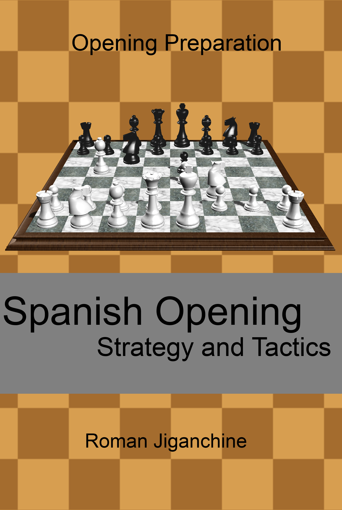

Spanish Opening - Strategy and Tactics
Created Thursday 07 December 2017
Amazon | Kobo | Google Play | Forward Chess | Paperback
The book presents a straightforward repertoire for White after 1. e4 e5 and focuses on the Spanish Opening. Most major variations at Black's disposal are briefly explained and covered. The book is a follow up to "Exchange Slav - Strategy and Tactics" and is intended for chess players who want to learn the Spanish opening and are looking for a quick overview of the major variations. For each line, several sample games are followed by tactical positions typical for that line. Any player who plays the Spanish Opening either as White or Black - can benefit from learning the specific middlegame themes presented here.
The format was specifically designed for e-readers. Most chapters have examples from practical games of chess champions of the past and present, such as Fischer, Karpov, Anand and Carlsen, followed by puzzles for the reader to solve. That should reinforce newly learned concepts and help get a better sense of the pawn structures discussed throughout the book. There are also questions for the reader to answer at the key moments of the games. To see solutions for puzzles and questions - just go to the next page.
